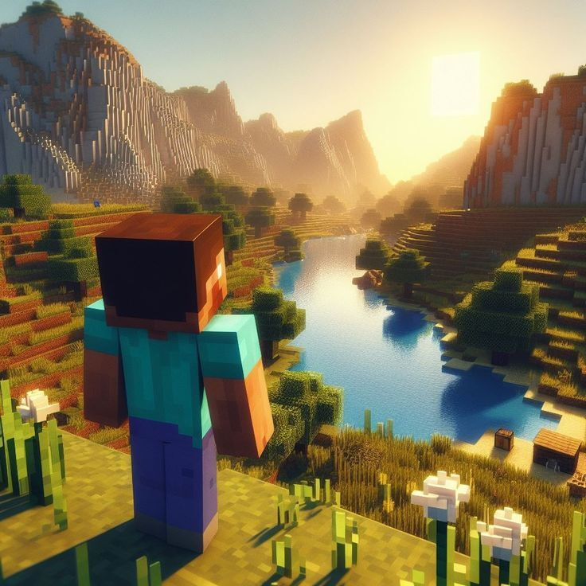

Fedezd Fel a Kalandokat

A Minecraftban a kalandok mindig új felfedezéseket tartogatnak. A véletlenszerűen generált világban bármikor találkozhatsz új kihívásokkal és ellenségekkel. Készen állsz felfedezni a sötét barlangokat, találkozni a szörnyekkel, és megkeresni a titkos kincseket?
Íme néhány kihívás, amivel szembenézhetsz:
- Barlangi Felfedezés: Merülj el a mély barlangok világában, és keresd meg a ritka ásványokat!
- Szörnyek Legyőzése: Készülj fel a harcra! Vedd fel a harci felszerelésedet, és küzdj a szörnyek ellen!
- Kincskeresés: Fedezd fel a rég elfeledett romokat, és keress kincseket a Minecraft világában!
Csatlakozz a Kalandhoz!
A Minecraft közösség tele van kalandvágyó játékosokkal, akikkel megoszthatod a tapasztalataidat. Csatlakozz a multiplayer játékokhoz, és élvezd a közös felfedezést!
Az alábbi tippeket érdemes figyelembe venni a kalandok során:
- Fedezd fel a környezeted: Mindig figyelj a környezetedre! A Minecraft világ tele van meglepetésekkel!
- Használj térképeket: Készíts térképet a felfedezett területekről, hogy ne tévedj el!
- Csapatmunka: Kalandjaid során mindig érdemes csapatban dolgozni, hiszen együtt könnyebb legyőzni a kihívásokat!
Ne feledd, a Minecraft világában bármi megtörténhet, és a kaland sosem ér véget!